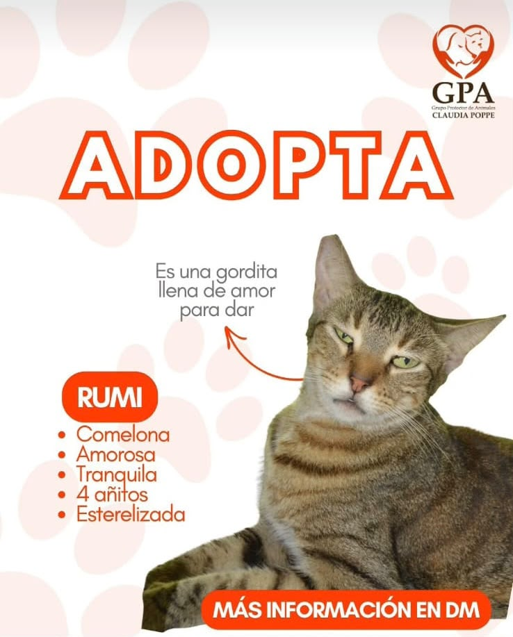

Quiero adoptarGrupo Protector Animal
Claudia Poppe
Una segunda oportunidad comienza con una oportunidad.
El Grupo Protector Animal Claudia Poppe trabaja por el bienestar y la protección de animales que necesitan un hogar, brindándoles cuidado, atención y la oportunidad de encontrar una familia responsable.
Conócenos
❤️ Sobre el GPA
¿Quiénes somos?
El Grupo Protector Animal Claudia Poppe (GPA) es una organización dedicada a la protección y bienestar de animales en situación de abandono o vulnerabilidad. Su labor busca brindarles cuidado y protección mientras se trabaja para encontrarles un hogar donde puedan recibir el cariño y la atención que necesitan.
Más que rescatar animales, el GPA busca generar conciencia sobre la tenencia responsable y promover una comunidad comprometida con el bienestar animal.
Cada animal tiene una historia diferente, pero todos comparten algo: merecen una segunda oportunidad.
Nuestra misión
Proteger y mejorar la calidad de vida de animales en situación de vulnerabilidad, promoviendo su adopción responsable y fomentando una comunidad comprometida con el bienestar animal.
Nuestra visión
Construir una comunidad donde el abandono animal disminuya y cada animal tenga la oportunidad de encontrar un hogar responsable, seguro y lleno de cariño.
📍 ¿Dónde encontrarnos?
El Grupo Protector Animal Claudia Poppe se encuentra en nuestra ubicación indicada en Google Maps.
Para conocer más sobre nuestra labor, visitar el refugio o recibir información sobre los procesos de adopción y hogar temporal, puedes comunicarte con nosotros.
Conoce a quienes buscan un hogar
🐶 Animales en adopción
Cada uno de ellos tiene una historia, una personalidad y mucho cariño para dar.
Dale una segunda oportunidad
❤️ Adopción
¿Quieres darle un hogar a uno de nuestros animales?
Adoptar es asumir el compromiso de cuidar, proteger y brindar una vida digna a un animal. Antes de iniciar el proceso, asegúrate de contar con el tiempo, espacio y compromiso necesarios para asumir esta responsabilidad.
El proceso
- Conoce a nuestros animales y encuentra aquel con quien sientas una conexión.
- Completa el formulario de adopción con tu información.
- Evaluamos tu solicitud para conocer si las condiciones son adecuadas.
- Coordinamos el proceso de adopción y los siguientes pasos.
La adopción no solo cambia la vida de un animal. También puede cambiar la tuya.
Formulario de adopción
Si estás interesado en adoptar uno de nuestros animales, puedes completar nuestro formulario de adopción.
Formulario de adopciónUna ayuda temporal puede cambiar una vida
🏠 Hogar temporal
Una ayuda temporal puede cambiar una vida
Un hogar temporal brinda a un animal un espacio seguro mientras encuentra una familia definitiva. Es una forma de ayudar sin asumir necesariamente el compromiso permanente de una adopción.
Ser hogar temporal implica proporcionar alimentación, cuidado, seguridad y cariño, además de mantener comunicación con el GPA durante el proceso.
¿Qué necesitas?
- Un espacio seguro y adecuado.
- Tiempo para cuidar al animal.
- Compromiso y responsabilidad.
- Disposición para seguir las indicaciones del GPA.
Si no puedes adoptar, también puedes ayudar ofreciendo un hogar temporal.
Quiero ser hogar temporal
Si quieres ayudar temporalmente a uno de nuestros animales, completa el siguiente formulario.
Quiero ser hogar temporalTu ayuda también cuenta
💰 Donaciones
¿Quieres ayudar al GPA?
Tu aporte puede ayudar al Grupo Protector Animal Claudia Poppe a continuar brindando cuidado y protección a los animales que más lo necesitan.
Cada contribución puede convertirse en alimento, atención veterinaria, medicamentos y otros recursos necesarios para su bienestar.
Cada ayuda cuenta y puede cambiar una vida.
Quiero donar
Si deseas apoyar al GPA mediante una donación, puedes completar nuestro formulario.
Quiero donarMantente cerca del GPA
📱 Contacto y redes
Síguenos en nuestras redes sociales para conocer a nuestros animales, descubrir sus historias y enterarte de nuevas oportunidades para ayudar.
[Número de WhatsApp]